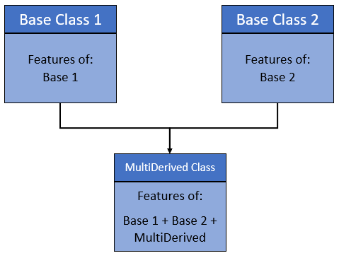
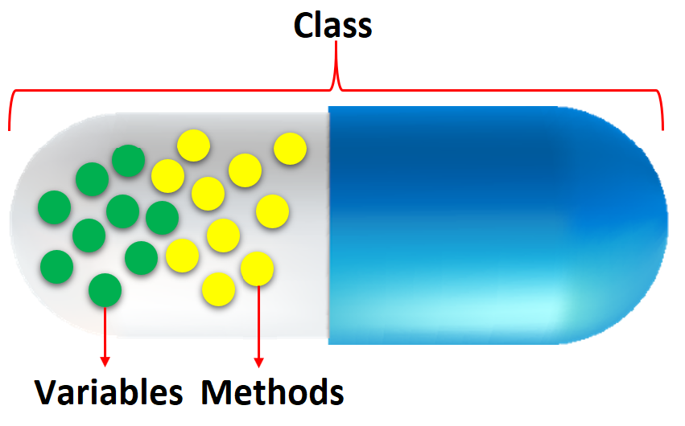

Object Oriented Programming#
One of the popular approaches to solve a programming problem is by creating objects. This is known as Object-Oriented Programming (OOP).
Object-oriented programming (OOP) is a programming paradigm based on the concept of “objects”.
The object contains both data and code:
Data in the form of properties (often known as attributes), and
Code, in the form of methods (actions object can perform).
An object has two characteristics:
attributes
behavior
For example:
A parrot is can be an object,as it has the following properties:
name, age, color as attributes
singing, dancing as behavior
The concept of OOP in Python focuses on creating reusable code. This concept is also known as DRY (Don’t Repeat Yourself).
In Python, the concept of OOP follows some basic principles:
Class#
üëâ In Python, everything is an object.
üëâ To create an object we require a model or plan or blueprint which is nothing but class.
üëâ We create class to create an object.
üëâ The class defines attributes and the behavior of the object
üëâ While the object, on the other hand, represents the class.
üëâ Class represents the properties (attribute) and action (behavior) of the object.
üëâ Properties represent variables, and actions are represented by the methods. Hence class contains both variables and methods.
Syntax:
class classname:
'''documentation string'''
class_suite
Documentation string: represent a description of the class. It is optional.
class_suite: class suite contains component statements, variables, methods, functions, attributes.
# Creating a class
class Person:
pass
print(Person)
<class '__main__.Person'>
Object#
üëâ As Class is just a blueprint or template, so it doesn‚Äôt have any memory or storage.
üëâ The physical existence of a class is nothing but an object. In other words, the object is an entity that has a state and behavior.
Syntax:
reference_variable = classname()
The example for object of parrot class can be:
obj = Parrot()
Here, obj is an object of class Parrot. It occupies space in memory.
# Example 1: We can create an object by calling the class
p = Person()
print(p)
<__main__.Person object at 0x109eafdd0>
# Example 2: Creating Class and Object in Python
class Student:
"""This is student class with data"""
def learn(self): # A sample method
print("Welcome to ml guide")
stud = Student() # creating object
stud.learn() # Calling method
Welcome to ml guide
# Example 2: Creating Class and Object in Python
class Person:
def __init__(self, firstname, lastname, age, country, city):
self.firstname = firstname
self.lastname = lastname
self.age = age
self.country = country
self.city = city
# Creating object using Person class with parameters
p = Person('Anukool', 'Chaturvedi', 120, 'England', 'London')
print(p.firstname)
print(p.lastname)
print(p.age)
print(p.country)
print(p.city)
Anukool
Chaturvedi
120
England
London
Instead of using the normal statements to access attributes, you can use the following functions:
getattr(obj, name[, default])− to access the attribute of object.hasattr(obj,name)− to check if an attribute exists or not.setattr(obj,name,value)− to set an attribute. If attribute does not exist, then it would be created.delattr(obj, name)− to delete an attribute.
Example:
hasattr(std1, 'id') # Returns true if 'id' attribute exists
getattr(std1, 'id') # Returns value of 'id' attribute
setattr(std1, 'id', 104) # Set attribute 'id' 104
delattr(std1, 'id') # Delete attribute 'id'
# Accessing city attribute for person object
print(getattr(p, 'city'))
# Checking age attribute for person object exists or not
print(hasattr(p, 'age'))
# Setting age attribute to some other value
setattr(p, 'age', 200)
print(getattr(p, 'age'))
# Deleting age attribute
delattr(p, 'age')
print(hasattr(p, 'age'))
London
True
200
False
print(Student.__doc__)
This is student class with data
Every Python class keeps following built-in attributes and they can be accessed using dot operator like any other attribute −
__dict__: Dictionary containing the class’s namespace.__doc__: Class documentation string or none, if undefined.__name__: Class name.__module__: Module name in which the class is defined. This attribute is__main__in interactive mode.__bases__: A possibly empty tuple containing the base classes, in the order of their occurrence in the base class list.
# deleting entire object
del p
p
---------------------------------------------------------------------------
NameError Traceback (most recent call last)
Cell In[33], line 4
1 # deleting entire object
2 del p
----> 4 p
NameError: name 'p' is not defined
Constructor#
üëâ Constructor is a special method in Python, which is used to initialize the attributes of the class.
üëâ It is called automatically when the object is created.
üëâ Like the constructor function in Java or JavaScript, Python has also a built-in __init__() constructor function.
üëâ The __init__() constructor function has self parameter which is a reference to the current instance of the class (in below example, self points to Person).
class Person:
def __init__ (self, name):
# self allows to attach parameter to the class
self.name =name
p = Person('Anukool')
print(p.name)
print(p)
Anukool
<__main__.Person object at 0x109e91580>
# Example 1: add more parameters to the constructor function.
class Person:
def __init__(self, firstname, lastname, age, country, city):
self.firstname = firstname
self.lastname = lastname
self.age = age
self.country = country
self.city = city
# Creating object using Person class with parameters
p = Person('Anukool', 'Chaturvedi', 120, 'England', 'London')
print(p.firstname)
print(p.lastname)
print(p.age)
print(p.country)
print(p.city)
Anukool
Chaturvedi
120
England
London
Instance variables & methods#
üëâ Instance variables are variables that are associated with each object.
üëâ For every object, a separate copy of the instance variable will be created.
üëâ Just like instance variables, we have instance methods associated with each object.
üëâ We need to create an object to execute the block of code or action defined in the instance method.
üëâ We can access the instance variable and methods using the object. Use dot (.) operator.
Note: Instance variables are used within the instance method
# Example 1: Creating Class and Object in Python with show method
class Student:
def __init__(self, name, percentage):
self.name = name
self.percentage = percentage
def show(self):
print("Name is:", self.name, "and percentage is:", self.percentage)
stud = Student("Arthur", 90)
stud.show()
Name is: Arthur and percentage is: 90
# Example 2: Creating Class and Object in Python
class Parrot:
species = "bird" # class attribute
def __init__(self, name, age): # instance attribute
self.name = name
self.age = age
# instantiate the Parrot class
blu = Parrot("Blu", 10)
woo = Parrot("Woo", 15)
# access the class attributes
print("Blu is a {}".format(blu.__class__.species))
print("Woo is also a {}".format(woo.__class__.species))
# access the instance attributes
print("{} is {} years old".format( blu.name, blu.age))
print("{} is {} years old".format( woo.name, woo.age))
Blu is a bird
Woo is also a bird
Blu is 10 years old
Woo is 15 years old
In the above program:
üëâ We created a class with the name Parrot.
üëâ Then, we define attributes (characteristics of the object), they are defined inside the __init__ method of the class.
üëâ __init__ is the initializer method that is first run as soon as the object is created.
üëâ Then, we create instances of the Parrot class. Here, blu and woo are references (value) to our new objects.
üëâ We can access the class attribute using __class__.species
Note: Class attributes are the same for all instances of a class
üëâ Similarly, we access the instance attributes using blu.name and blu.age.
Note: Instance attributes are different for every instance of a class.
# Example 3: Creating Object Methods in Python
class Parrot:
# instance attributes
def __init__(self, name, age):
self.name = name
self.age = age
# instance method
def sing(self, song):
return "{} sings {}".format(self.name, song)
def dance(self):
return "{} is now dancing".format(self.name)
# instantiate the object
blu = Parrot("Blu", 10)
# call our instance methods
print(blu.sing("'Happy'"))
print(blu.dance())
Blu sings 'Happy'
Blu is now dancing
In the above program, we define two methods i.e sing() and dance(). These are called instance methods because they are called on an instance object i.e blu.
üëâ Object Methods are functions defined inside the body of a class. They are used to define the behaviors of an object.
Inheritance#
üëâ Inheritance is the process of inheriting the properties of the base class (or parent class) into a derived class (or child class).
üëâ Using inheritance we can reuse parent class code.
üëâ Inheritance allows us to define a class that inherits all the methods and properties from parent class.
üëâ The parent class or super or base class is the class which gives all the methods and properties.
üëâ Child class is the class that inherits from another or parent class.
üëâ A child class can also provide its specific implementation to the functions of the parent class.
üëâ The main purpose of inheritance is the reusability of code because we can use the existing class to create a new class instead of creating it from scratch.
{kind=link}
Syntax:
class BaseClass:
Body of base class
class DerivedClass(BaseClass):
Body of derived class
# Example 1: Use of Inheritance in Python [Single Inheritance]
class ClassOne: # Base class
def func1(self):
print('This is Parent class')
class ClassTwo(ClassOne): # Derived class
def func2(self):
print('This is Child class')
obj = ClassTwo()
obj.func1()
obj.func2()
This is Parent class
This is Child class
Let us create a student class by inheriting from Person class.
# Example 2: Use of Inheritance in Python [Single Inheritance]
class Person:
def __init__(self, firstname='Anukool', lastname='Chaturvedi', age=200, country='England', city='London'):
self.firstname = firstname
self.lastname = lastname
self.age = age
self.country = country
self.city = city
self.skills = []
def person_info(self):
return f'{self.firstname} {self.lastname} is {self.age} years old. He lives in {self.city}, {self.country}.'
def add_skill(self, skill):
self.skills.append(skill)
class Student(Person):
pass
s1 = Student('Arthur', 'Curry', 33, 'England', 'London')
s2 = Student('Emily', 'Carter', 28, 'England', 'Manchester')
print(s1.person_info())
s1.add_skill('HTML')
s1.add_skill('CSS')
s1.add_skill('JavaScript')
print(s1.skills)
print(s2.person_info())
s2.add_skill('Organizing')
s2.add_skill('Marketing')
s2.add_skill('Digital Marketing')
print(s2.skills)
Arthur Curry is 33 years old. He lives in London, England.
['HTML', 'CSS', 'JavaScript']
Emily Carter is 28 years old. He lives in Manchester, England.
['Organizing', 'Marketing', 'Digital Marketing']
üëâ We did not call the __init__() constructor in the child class.
üëâ If we didn‚Äôt call it then we can still access all the properties from the parent.
üëâ But if we do call the constructor we can access the parent properties by calling super().
üëâ We can add a new method to the child or we can override the parent class methods by creating the same method name in the child class.
üëâ When we add the __init__() function, the child class will no longer inherit the parent‚Äôs __init__() function.
Let’s see how we can override the parent method.
# Example 3: Overriding parent method from above example
class Student(Person):
def __init__ (self, firstname='Anukool', lastname='Chaturvedi',age=200, country='England', city='London', gender='male'):
self.gender = gender
super().__init__(firstname, lastname,age, country, city)
def person_info(self):
gender = 'He' if self.gender =='male' else 'She'
return f'{self.firstname} {self.lastname} is {self.age} years old. {gender} lives in {self.city}, {self.country}.'
s1 = Student('Arthur', 'Curry', 33, 'England', 'London','male')
s2 = Student('Emily', 'Carter', 28, 'England', 'Manchester','female')
print(s1.person_info())
s1.add_skill('HTML')
s1.add_skill('CSS')
s1.add_skill('JavaScript')
print(s1.skills)
print(s2.person_info())
s2.add_skill('Organizing')
s2.add_skill('Marketing')
s2.add_skill('Digital Marketing')
print(s2.skills)
Arthur Curry is 33 years old. He lives in London, England.
['HTML', 'CSS', 'JavaScript']
Emily Carter is 28 years old. She lives in Manchester, England.
['Organizing', 'Marketing', 'Digital Marketing']
üëâ We can use super() built-in function or the parent name Person to automatically inherit the methods and properties from its parent.
üëâ In the example above we override the parent method. The child method has a different feature, it can identify, if the gender is male or female and assign the proper pronoun(He/She).
# Example 4: Use of Inheritance in Python
# parent class
class Bird:
def __init__(self):
print("Bird is ready")
def whoisThis(self):
print("Bird")
def swim(self):
print("Swim faster")
# child class
class Penguin(Bird):
def __init__(self):
# call super() function
super().__init__()
print("Penguin is ready")
def whoisThis(self):
print("Penguin")
def run(self):
print("Run faster")
peggy = Penguin()
peggy.whoisThis()
peggy.swim()
peggy.run()
Bird is ready
Penguin is ready
Penguin
Swim faster
Run faster
üëâ Here, we have Bird (parent class) and Penguin (child class). The child class inherits the functions of parent class. We can see this from the swim() method.
üëâ Next, the child class modified the behavior of the parent class. We can see this from the whoisThis() method.
üëâ Furthermore, we extend the functions of the parent class, by creating a new run() method.
üëâ Additionally, we use the super() function inside the __init__() method. This allows us to run the __init__() method of the parent class inside the child class.
Types#
Based upon the number of child and parent classes involved, there are five types of inheritance.
Single Inheritance
Multiple Inheritance
Multilevel inheritance
Hierarchical Inheritance
Hybrid Inheritance
Single#
A derived class inherits from a single-base class. Examples mentioned above are Single Inheritance
{kind=link}
Multiple#
One derived class can inherit from multiple base classes.
{kind=link}
# Example 1: Multiple Inheritance
# Base class 1
class Person:
def person_info(self, name, age):
print('Inside Person class')
print('Name:', name, 'Age:', age)
# Base class 2
class Company:
def company_info(self, company_name, location):
print('Inside Company class')
print('Name:', company_name, 'location:', location)
# Derived class
class Employee(Person, Company):
def Employee_info(self, salary, skill):
print('Inside Employee class')
print('Salary:', salary, 'Skill:', skill)
# Create object of Employee
emp = Employee()
# access data
emp.person_info('Milaan', 33)
emp.company_info('Google', 'Atlanta')
emp.Employee_info(19000, 'Machine Learning')
Inside Person class
Name: Milaan Age: 33
Inside Company class
Name: Google location: Atlanta
Inside Employee class
Salary: 19000 Skill: Machine Learning
Multilevel#
Here, we can also inherit from a derived class. It can be of any depth in Python.
All the features of the base class and the derived class are inherited into the new derived class.
{kind=link}
# Example 1:
# Base class
class Vehicle:
def Vehicle_info(self):
print('Inside Vehicle class')
# Child class
class Car(Vehicle):
def car_info(self):
print('Inside Car class')
# Child class
class SportsCar(Car):
def sports_car_info(self):
print('Inside SportsCar class')
# Create object of SportsCar
s_car = SportsCar()
# access Vehicle's and Car info using SportsCar object
s_car.Vehicle_info()
s_car.car_info()
s_car.sports_car_info()
Hierarchical#
In Hierarchical inheritance, more than one child class is derived from a single parent class. In other words, we can say one base class and multiple derived classes.

# Example 1:
class Vehicle:
def info(self):
print("This is Vehicle")
class Car(Vehicle):
def car_info(self, name):
print("Car name is:", name)
class Truck(Vehicle):
def truck_info(self, name):
print("Truck name is:", name)
obj1 = Car()
obj1.info()
obj1.car_info('BMW')
obj2 = Truck()
obj2.info()
obj2.truck_info('Ford')
This is Vehicle
Car name is: BMW
This is Vehicle
Truck name is: Ford
Hybrid#
When inheritance is consists of multiple types or a combination of different inheritance is called hybrid inheritance.
{kind=link}
# Example 1:
class Vehicle:
def vehicle_info(self):
print("Inside Vehicle class")
class Car(Vehicle):
def car_info(self):
print("Inside Car class")
class Truck(Vehicle):
def truck_info(self):
print("Inside Truck class")
# Sports Car can inherits properties of Vehicle and Car
class SportsCar(Car, Vehicle):
def sports_car_info(self):
print("Inside SportsCar class")
# create object
s_car = SportsCar()
s_car.vehicle_info()
s_car.car_info()
s_car.sports_car_info()
Inside Vehicle class
Inside Car class
Inside SportsCar class
Method overriding#
üëâ In inheritance, if the child class wants to implement the method with same name and parameters as of parent class but with different logic then that is called method overriding.
üëâ When a child class method has the same name, same parameters, and same return type as a method in its superclass, then the method in the child is said to override the method in the parent class.
{kind=link}
# Example 1:
class Vehicle:
def max_speed(self):
print("max speed is 100 Km/Hour")
class Car(Vehicle):
# overridden the implementation of Vehicle class
def max_speed(self):
print("max speed is 200 Km/Hour")
# Creating object of Car class
car = Car()
car.max_speed()
max speed is 200 Km/Hour
Method overriding is also called Runtime Polymorphism.
Encapsulation#
üëâ Encapsulation is a method of wrapping data and functions into a single entity, like a class encapsulates all the data (methods and variables).
üëâ Encapsulation means the internal representation of an object is generally hidden from outside of the object‚Äôs definition.
{kind=link}
üëâ Using OOP in Python, we can restrict access to methods and variables. This prevents data from direct modification which is called encapsulation.
üëâ We denote private attributes using underscore as the prefix i.e single _ or double __.
üëâ In Python, we do not have access modifiers directly, such as public, private, and protected.
üëâ But we can use single prefix underscore _ and double underscore __. to control access of variable and method within the Python program.
# Example 1: Data Encapsulation in Python
class Computer:
def __init__(self):
self.__maxprice = 900
def sell(self):
print("Selling Price: {}".format(self.__maxprice))
def setMaxPrice(self, price):
self.__maxprice = price
c = Computer()
c.sell()
# change the price
c.__maxprice = 1000
c.sell()
# using setter function
c.setMaxPrice(1000)
c.sell()
Selling Price: 900
Selling Price: 900
Selling Price: 1000
üëâ We used __init__() method to store the maximum selling price of Computer.
üëâ We tried to modify the price. However, we can‚Äôt change it because Python treats the __maxprice as private attributes.
üëâ As shown, to change the value, we have to use a setter function i.e setMaxPrice() which takes price as a parameter.
# Example 2: Data Encapsulation in Python
class Employee:
def __init__(self, name, salary):
self.name = name
self.__salary = salary
def show(self):
print("Name is ", self.name, "and salary is", self.__salary)
# Outside class
E = Employee("Bella", 60000)
print(E.__salary)
# AttributeError: 'Employee' object has no attribute '__salary'
---------------------------------------------------------------------------
AttributeError Traceback (most recent call last)
Cell In[22], line 13
11 # Outside class
12 E = Employee("Bella", 60000)
---> 13 print(E.__salary)
15 # AttributeError: 'Employee' object has no attribute '__salary'
AttributeError: 'Employee' object has no attribute '__salary'
__salary is the private variable. We cannot access it from outside of class. If we try to access it, we will get an error.
Polymorphism#
üëâ Polymorphism is the ability of an object to take on many forms
Example 1: The student can act as a student in college, act as a player on the ground, and as a daughter/brother in the home.
Example 2: In the programming language, the + operator, acts as a concatenation and arithmetic addition.
Example 3: If we need to color a shape, there are multiple shape options (rectangle, square, circle). However we could use the same method to color any shape.

üëâ In Python, polymorphism allows us to define the child class methods with the same name as defined in the parent class.
# Example 1: Using Polymorphism in Python
class Parrot:
def fly(self):
print("Parrot can fly")
def swim(self):
print("Parrot can't swim")
class Penguin:
def fly(self):
print("Penguin can't fly")
def swim(self):
print("Penguin can swim")
# common interface
def flying_test(bird):
bird.fly()
#instantiate objects
blu = Parrot()
peggy = Penguin()
# passing the object
flying_test(blu)
flying_test(peggy)
Parrot can fly
Penguin can't fly
üëâ In the above program, each of the classes have a common fly() method. However, their functions are different.
üëâ To use polymorphism, we created i.e flying_test() function that takes any object as parameter and calls the object‚Äôs fly() method.
üëâ When we passed the blu and peggy objects in the flying_test() function, it ran effectively.